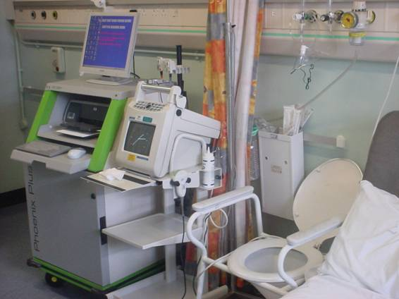

Introduction
International Incontinence Society (ICS) has defined Urodynamic Studies as the evaluation of function and malfunction of urinary tract (1). In general we understand that an “Urodynamic Study “is a dynamic study of lower urinary tract but we cannot forget that we must evaluate the whole urinary tract including kidneys, ureter, bladder and urethra.
To avoid this confusion we will use the term cystometry to refer to the study of lower urinary tract, including bladder function of filling, emptying and coordination with the external urinary sphincter (2).Urodynamic Study of Lower Urinary Tract can be done either invasively or non invasively.(2-3) (Figure 1).
The modern trend among paediatric urologists is to get a clinical approach to diagnosis with an accurate clinical history and physical exam, and a voiding chart, decreasing the number of children that need more complex and invasive exams.
Better results can be obtained if there is a multidisciplinary team with specialist trained nurses. Ideally there should exist a special place where children feel comfortable and relaxed, with proper equipment (videos, toys, ultrasound and uroflowmetry) so it can avoid any kind of disturbance that can change the results of the planned exams.
Medical history is crucial. It must be obtained in an appropriate place with enough time to get as much information as possible. Every single detail is important, therefore it must be asked, as it can make a big difference in the final management.
Key points to ask:
Physical Exam Key Points
Voiding Chart also known as frequency-volume chary or bladder diary, is a simple, non invasive record that reveals extremely useful information. (2,4). Ideally it should consist of a record for a minimum of a 3 day period. The key points that must be recorded are:
Urinary Tract Ultrasound is essential. It can show either anatomical and/or functional diseases. Pre and post void residuals should be recorded. It allows to evaluate anatomic characteristics of the bladder (shape, thickness of the bladder wall, presence of trabeculations) just like the pre and post voiding volume, that is extremely useful information which added to uroflowmetry, gives a lot of information about bladder functionality
Uroflowmetry is a non invasive examination, which gives a lot of information about bladder emptying. The patient must pee in a proper seat for the child (Fig. 1) with a device that records micturition, called a uroflowmeter. An ultrasound to measure post voiding bladder volume must be also asked for. It can be done at the same time as cystometry for the study of bladder emptying. (5)
Uroflowmetry can be done without a urinary catheter and only require that the child is potty trained and can void on demand. It can also record the external urethral sphincter activity with surface electrodes attached to the perineum. Hence with this one test, the balder capacity, storage and emptying characteristics and electromyography of the external sphincter/pelvic floor and anterior abdominal wall can be assessed in a non invasive fashion.
Normal patients have a bell shape curve, with a maximal flow that changes with age and gender (6-7). Baseline external urethral sphincter activity must diminish when micturition begins, in that way, there won´t be resistance to urine flow. (8) When it finished the post voiding volume of bladder must be measured, with a bladder ultrasound or urethral catheter. Normal post voiding volume must not exceed a 10% of pre voiding bladder volume (9).
It is well known that it is very difficult to fix normal values because all these depend on gender, age, bladder capacity, etc. But it can establish the voiding volume, frequency and voiding pattern (10). A bell shaped curve is considered normal, but a flat one, with a prolonged urinary flow and a low flow rate is suggestive of an obstructive pattern. A staccato flow (interrupted) may show, among others, an uncoordinated contraction of detrusor and sphincter activity. Urinary flow less than 10-12 ml/sec is considered abnormal , even when we know that girls have increased frequency of micturition than boys. (11-12). As urinary flows are variable, we recommend have three uroflow readings and calculate a mean value.
Uroflowmetry allows us to control the management of a low urinary tract obstruction due to anatomical causes (PUV) or functional (after pelvic floor training).
We must say that with all this information it is possible to calculate and check the bladder volume or its capacity, that could be calculated previously by several formulas (13-14). Although there is not an ideal formula, it is necessary to determine the bladder capacity consistently with the same formula; therefore team needs to determine which one they will use, so it can evaluate and compare results over time.
As a part of urinary tract study there are nuclear medicine tests, scintigraphic studies such as MAG3 and DMSA. They give anatomical and functional information. When you add an indirect study to scintigraphy you can detect the presence of vesicoureteral reflux (VUR). The study of lower urinary tract (bladder and urethra) is called cystometry and this tries to mimic as real as possible the micturition patterns and the bladder behavior of an awake, non sedated and ideally, cooperative child (2). It measures of intravesical, abdominal and detrusor pressures. It is possible to complement this procedure with electromyography and uroflowmetry. Ideally this study must be done under standard physical and psychological conditions for the child so possible interferences can be avoided (15).
Another resource to avoid interferences is to perform a natural filling cystometry, installing 24 hrs previously a suprapubic one channel catheter (Cistofix®). This technique allows the child -usually an infant- to be in his/her mother´s arms while he/she is doing any normal activity, meanwhile the bladder is being filled naturally, the pressure through the catheter can be recorded (16).
This technique requires well trained operators and an adapted space because we must wait for natural bladder filling which can be slow.
Traditionally, this study has been done through a double channel catheter introducing a saline solution into the bladder with a known flow, pretending to resemble the normal filling phase and to evaluate the patient´s micturition. This catheter can be passed through the urethra or via the suprapubic route. The advantage of the second method is that urethra and bladder emptying is not interfered by a foreign body. On the other hand, a urethral catheter prevents the need for the child to have a general anaesthetic for suprapubic catheter insertion. The choice of which route to introduce the dual lumen catheter depends on which of the filling, storage and emptying phases is primarily being evaluated. If the urethral pressures or leak point pressures are being evaluated prior to consideration of a bladder neck procedure, a suprapubic route would be ideal. Also it is possible to insert a bladder catheter through any continent diversion that the patient may have such as a Mitrofanoff conduit.
A cystometry requires (Fig. 2)
Uroflowmetry has already been explained.
When we do a polygraphic record with a cystomanometry, detrusor pressure during bladder filling and bladder emptying are registered. To do this a double channel catheter must be inserted as explained above. It is recommended that the fill rate that must not exceed a 10% of known bladder capacity of the patient, taken from a voiding diary, an ultrasound or a MUCG. It also must not exceed 10ml/min (17). The second channel transmits intra vesical pressure to a transducer. This information is translated by a software into a curve. If we use a suprapubic catheter of one channel, the filling stage is given by the child’s urine, and the catheter records the pressure.
If the fluid that is used in the infusion is mixed with X-ray contrast, and the study can be done in an X-Ray room, the procedure is called Video-Urodynamics. Thus, it can be evaluated bladder shape, bladder neck shape and behavior, presence of VUR, bladder dynamics, emptying dynamic, post voiding volume and double filling of the bladder after an episode of VUR (18).
As bladder pressure is submitted to intra abdominal pressure, we need to know it and discount it. The intra-abdominal pressure is measured with a balloon inserted into the rectum or when available through a distal enterostomy. This balloon senses the changes of pressure to a transducer that, through a software, records a second curve (1,19). The same software permanently calculates differences between bladder and abdominal pressure to create a third curve that records the detrusor pressure.
det P° = blad P° – abd P°
In normal conditions we expect that detrusor pressure remains low during the filling of the bladder, with values under 10 cm H20. Bladder accommodates by the viscoelastic properties of the wall and then, even when volume grows, pressure remains stable (1).
At some point during the filling process, patient will have bladder fullness sensation, with voiding desire, that will increase progressively until having an imminent voiding desire. At this time the pump must be stopped and the patient allowed to micturate.
During voiding, must be observed if there is some degree of hesitancy or Valsalva´s maneuvers used to start micturition. Usually the patients start spontaneous voiding with a detrusor contraction that is recorded as an increased and supported value of 35 a 45 cm H20, associated to a bell shape voiding curve with decreased electromyographic activity. At the end of micturition, we measure post-voiding volume that must not exceed 10% of bladder capacity (3,5,19).
Alterations that can be seen in bladder filling stage are basically two (1):
Alterations in bladder voiding stage are (1):
1. Lower urinary tract obstructions It refers to anatomical or functional disorder that increases resistance to urinary flow, and that, in a very advanced stage, is characterized by a plateau curve, associated a prolonged contraction of the detrusor muscle, that in response, is trying to overcome the obstruction with or without an elevation in intra-abdominal pressure. When dealing with a functional obstruction this will show an increase in sphincter activity during voiding. These patients can have enlarged post voiding residual volumes.
2. Detrusor Underactivity: This is a contraction of the detrusor that is weak, absent or too short and that is inefficient to achieve complete bladder emptying. Patients use Valsalva manoeuvres to facilitate bladder emptying, recorded as increased abdominal pressure, and may present increased post voiding residual volume. It can be due to a bladder outlet obstruction, with an exhausted detrusor, or due to neurological disease.
Cystometry in childhood is different from adults because bladder dynamics is a changing process during development and some alterations at some age, can be normal in others. (like overactivity in infants) (20). Bladder capacity also will change, and the patient will be able to keep bigger volumes inside the bladder as he/she grows. There are some pathologies such overactive bladder (OAB), that might limit bladder´s growing due to frequent emptying as a result of the un inhibited contractions.
Actually it is possible to do cystometry studies at night, with one channel catheter, watching nocturnal bladder behavior. Also it is possible to perform Holter Cystometry (8,16) recording bladder pressure over a predetermined time, with the child at home, recording a voiding diary. All these attempt to explore bladder in its own environment, in the most natural way possible, and may give more useful information.
Guided by non invasive tests and where appropriate, other resources to complete the urodynaimc study are Computed Axial Tomography, Magnetic Nuclear and Whitaker test or urodynamic test of upper urinary tract. (3).
The image studies (MNR and CT scan) exceed the objectives of this chapter and the Whitaker test has lost popularity in time, been replaced for new less invasive studies.
Urodynamic Studies embrace the whole Urinary Tract, and must be considered in the armamentarium of urological practice. Simple non invasive urodynamics (iary, uroflowmetry and ultrasound) allow us to guide diagnosis and treatment in the majority of urological patients reducing the need for invasive urodynamics for more complex children with incontinence such as patients with anorectal malformations, posterior urethral valves, bladder exstrophy or spinal dysraphism (2,5).
Interpretation of a urodynamic study requires experience. These studies require time, patience and the contribution of child and family and requires their involvement with the multidisciplinary team.
1.- Abrams P, Blaivas JG, Stanton SL, Andersen JT. The standardization of terminology of lower urinary tract function. The International Continence Society Committee on Standardization of Terminology. Scand J Urol Nephrol Suppl 1988; 114:5-19.
2.- Dinneen MD, Duffy PG. The value of urodynamic studies. Arch Dis Child. 1993 Aug;69(2):177-9
3.- Chapple C., MacDiarmid S., Urodynamics, Made Easy, Churchill Livingstone Ed, Sec. Edition, 2003
4.-.Marshall DF, Boston VE. Does bladder capacity assessment by frequency/volume chart correlate well with urodynamic estimation in children with spina bifida? Eur J Pediatr Surg 2001; 11 Suppl 1:S24-S27
5.- Nijman R, Urodynamic Studies of the Lower Urinary Tract, in Pediatric Urologiy, Gearhat, Rink, Moriquand ed, Saunders, 2001, pp 187- 197
6.- Hjälmas k, Micturition in infants and children with normal urinary tract
Scand J. Urol Nephrol Suppl 37, 1976
7.- Scott FB, Quesada EM, Cardus S, Studies on the dynamics of micturition. J Urol 92 : 465, 1964
8.- Van Waalwijk van Dorn ESC, Meier AHP, Ambergen AW and Junknegt RA, Ambulatory Urodynamics: Extramural testing of de Lower and Upper Urinary Tract Urol Clin North Am 23: 345, 1996
9.- Kaefer M, Rosen A, Darbey M, Kelly M, Bauer SB. Pressure at residual volume: a useful adjunct to standard fill cystometry. J Urol 1997; 158(3 Pt 2):1268-1271.
10.- Szabo L, Fegyverneki S. Maximum and average urine flow rates in normal children--the Miskolc nomograms. Br J Urol 1995; 76(1):16-20.
11.- Mattsson S, Spangberg A. Urinary flow in healthy schoolchildren. Neurourol Urodyn 1994; 13(3):281-296.
12.- Pompino HJ, Hoffmann D. Normal urinary flow for girls aged 3-14 years. Z Kinderchir 1983; 38(3):177-181.
13.- Koff SA. Estimating bladder capacity in children. Urology 1983; 21(3):248.
14.- Kaefer M, Zurakowski D, Bauer SB, Retik AB, Peters CA, Atala A et al. Estimating normal bladder capacity in children. J Urol 1997; 158(6):2261-2264.
15.- Wen JG, Yeung CK, Djurhuus JC Cystometry techniques in female infants and children, Int Urogynecol J Pelvic Floor Dysfunct. 2000;11(2):103-12.
16.- Yeung CK, Godley ML, Duffy PG, Ransley PG. Natural filling cystometry in infants and children Br J Urol. 1995 Apr;75(4):531-7.
17.- Kaefer M, Rosen A, Darbey M, Kelly M, Bauer SB. Pressure at residual volume: a useful adjunct to standard fill cystometry. J Urol 1997; 158(3 Pt 2):1268-1271
18.- Saxton HM. Urodynamics: the appropriate modality for the investigation of frequency, urgency, incontinence, and voiding difficulties. Radiology 1990; 175(2):307-316.
19.- Gierup J. Ericsson NO and Okmain L . Micturitiun studies in infants and Children Scand J. Urol 3: 1, 1969
20.- Churchill B., Abramson R., Whal W. Disfunción de la parte baja de las vias urinarias y porcion distal del tubo digestivo en pacientes pediatricos con trastornos diagnosticados de la medula espinal, Clinicas Pediatricas de Norteamérica Urología 2001
Flowmetry with a WC

Urodynamic equipment
 |
 |
 |
 |
 |
 |
 |
 |